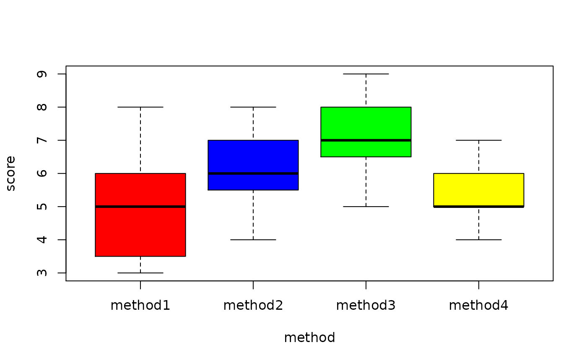
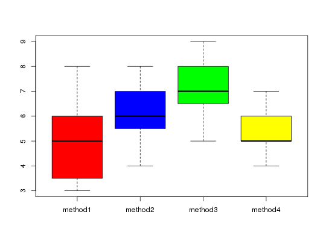

Data for Exercise 10.17
Program
A data frame/tibble with 44 observations on two variables
a character variable with values method1, method2,
method3, and method4
standardized test score
Kitchens, L. J. (2003) Basic Statistics and Data Analysis. Pacific Grove, CA: Brooks/Cole, a division of Thomson Learning.
boxplot(score ~ method, col = c("red", "blue", "green", "yellow"), data = Program)anova(lm(score ~ method, data = Program))#> Analysis of Variance Table #> #> Response: score #> Df Sum Sq Mean Sq F value Pr(>F) #> method 3 32.455 10.8182 7.1257 0.0006043 *** #> Residuals 40 60.727 1.5182 #> --- #> Signif. codes: 0 ‘***’ 0.001 ‘**’ 0.01 ‘*’ 0.05 ‘.’ 0.1 ‘ ’ 1TukeyHSD(aov(score ~ method, data = Program))#> Tukey multiple comparisons of means #> 95% family-wise confidence level #> #> Fit: aov(formula = score ~ method, data = Program) #> #> $method #> diff lwr upr p adj #> method2-method1 1.3636364 -0.04462508 2.7718978 0.0607727 #> method3-method1 2.2727273 0.86446583 3.6809887 0.0005511 #> method4-method1 0.5454545 -0.86280690 1.9537160 0.7282383 #> method3-method2 0.9090909 -0.49917054 2.3173524 0.3218465 #> method4-method2 -0.8181818 -2.22644326 0.5900796 0.4140367 #> method4-method3 -1.7272727 -3.13553417 -0.3190113 0.0109054 #>par(mar = c(5.1, 4.1 + 4, 4.1, 2.1)) plot(TukeyHSD(aov(score ~ method, data = Program)), las = 1)par(mar = c(5.1, 4.1, 4.1, 2.1))